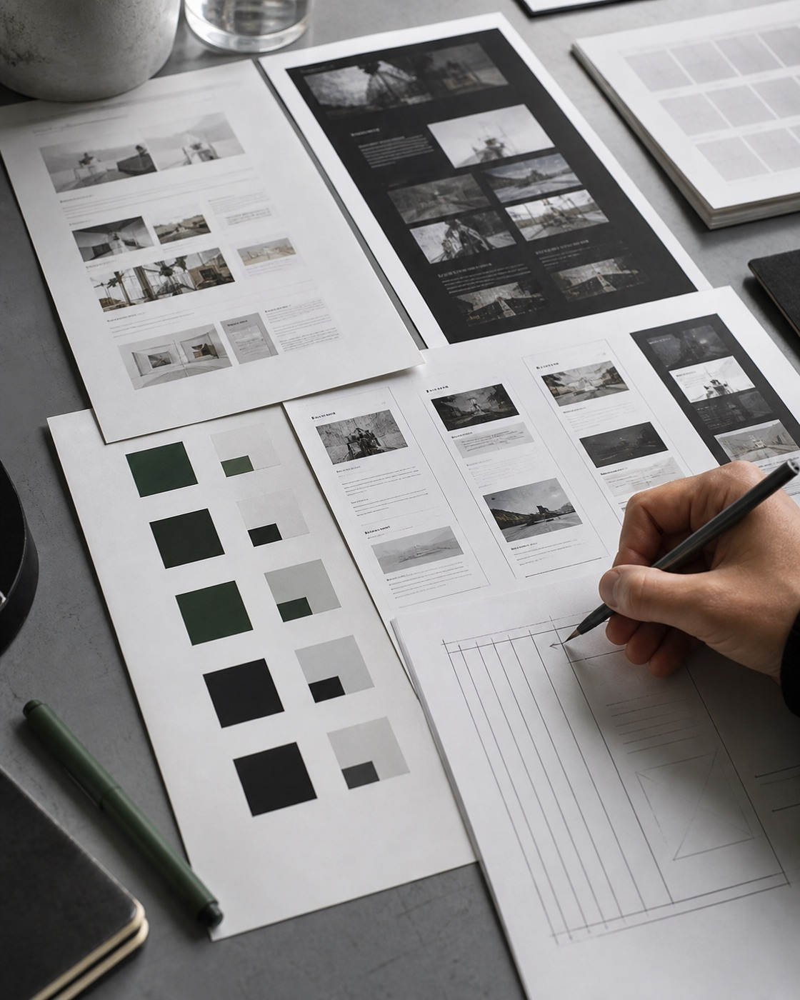

Phoebe Picks
Browse
Proof before picks
Find Skills by real work.
Source, rating, and demo proof stay visible before anyone tries a Skill.
Reading this as: an editorial field test for AI builders, with a cool evidence-first studio language.
Turn vague taste into design decisions you can inspect.

npx skills add https://github.com/Leonxlnx/taste-skill --skill "design-taste-frontend"
Inspect source
Choose a Skill feature. The specimen updates with the rule, the proof, and the page behavior it changes.
Infer page kind, audience, references, assets, and constraints before writing code.
The page starts by naming the audience and design language before showing any interface.
Switch states to see how the Skill changes structure, language, contrast, and visual confidence.
Source, rating, and demo proof stay visible before anyone tries a Skill.
Switch the specimen through loading, empty, error, and ready states. Each state keeps context and a next action.
Thirteen concept families have inspectable evidence in this field test.
Run the check. The page marks which taste rules are actively covered by the build.
One design read appears before the interface.
Variance, motion, and density guide the page.
Generic purple glow and filler copy are isolated as the bad state.
The page uses real image assets and a real mini interface preview.
Motion is used for state transitions and disabled when requested.
One token system covers the complete light and dark page.
Loading, empty, error, and ready views stay useful.
Layouts collapse explicitly, and tokens respond to system color preference.
0 checks passed